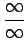
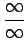

Inhalt Index DeskTop Bronstein

 Funktionalanalysis Maß und Lebesgue-Integral Sigma-Algebren und Maße
Funktionalanalysis Maß und Lebesgue-Integral Sigma-Algebren und Maße


Sei  eine beliebige Menge. Ein nichtleeres System
eine beliebige Menge. Ein nichtleeres System  von Teilmengen aus
von Teilmengen aus  heißt
heißt  -Algebra, wenn
-Algebra, wenn
Im weiteren bezeichne  die durch die Elemente und erweiterte Menge (Zahlengerade)
die durch die Elemente und erweiterte Menge (Zahlengerade)  , wobei die Rechenregeln und Ordnungseigenschaften aus
, wobei die Rechenregeln und Ordnungseigenschaften aus  in natürlicher Weise auf
in natürlicher Weise auf  übertragen werden. Die Ausdrücke
übertragen werden. Die Ausdrücke  und  sind dabei nicht zugelassen, während und den Wert 0 erhalten.
und  sind dabei nicht zugelassen, während und den Wert 0 erhalten.